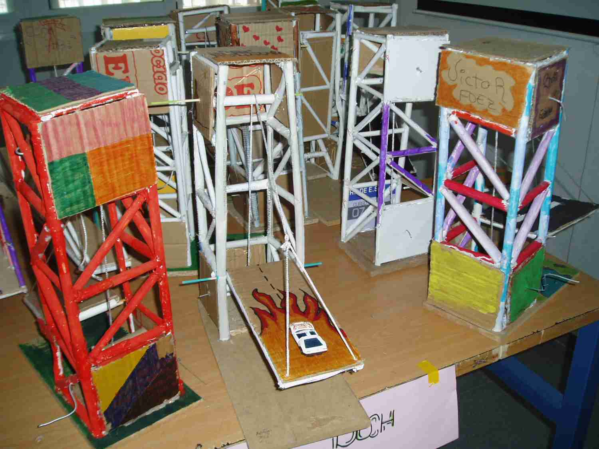
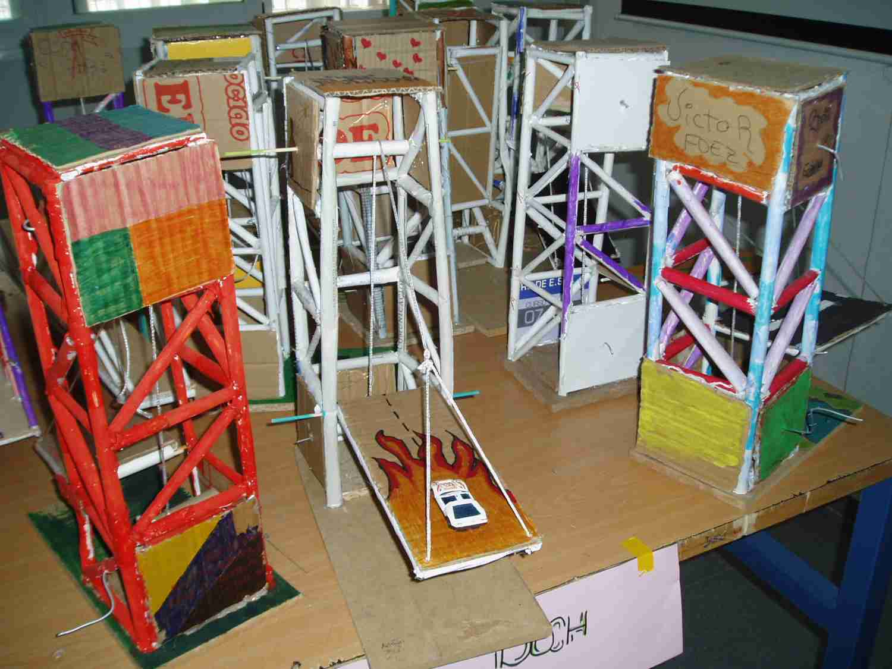

Fase 2.1: Construcción de la estructura de nuestro Puente Levadizo

Puentes levadizos de cuatro plantas (imagen original tomada en el taller de tecnología)

Puentes levadizos de cuatro plantas (imagen original tomada en el taller de tecnología)
Vamos a realizar tareas de construcción en el taller, lo que te permitirá:
Obra publicada con Licencia Creative Commons Reconocimiento Compartir igual 4.0